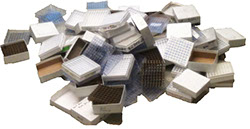

Affiliated Websites
About Me
Dr. Roland C. Wilhelm

The 3.8 billion year old palimpsest inked by natural selection onto the landscape of earth is slowly being revealed by the determination and ingenuity of interdisciplinary scientists with the help of DNA sequencing technologies. We are now able to explore the idiosyncrasies of evolution and examine the incredible adaptability and diversity of life on planet Earth. The knowledge we gain will help us develop technology for a changing world and tackle wickedly complex problems such as climate change, food and energy security, conservation and inequality.
I study nature's smallest creatures and how they build fertile soils and bolster plant growth. Bacteria and fungi live astonishingly complex lives in soil and form partnerships with plants, like mycorrhiza. I am interested in exploring the nature of symbioses among microorganisms and plants, asking "who eats what from whom?" and "who eats whom?". We can now begin to answer these questions using techniques like stable isotope probing and metagenomics, which unravel the complexity of the microbial world. Understanding the lifestyles of soil microbes may seem a bit esoteric, but the more we know about their ecology and physiology, the better we can implement strategies to improve the fertility of soils, crop yields and sequester carbon (a win-win).
I gladly welcome any opportunity to collaborate, discuss ideas and answer any questions that you may have about microbiology and, broadly-speaking, the awe-inspiring natural history of planet Earth.

Research
Background
Plants are exceptional at harvesting the energy and raw materials needed for life. Their success is a windfall for a multitude of lifeforms that feed on or depend upon plants in one way or another. Most of these lifeforms are hidden to us because of their microscopic size, but the day-to-day lives of these microbes shape our ecosystems and drive the biogeochemical cycles upon which humans depend.
I am interested in learning about the kinds of partnerships between microbes and plants and what makes them successful and stable. From researching the soil microbiome, I have found three major qualities of microbes that make for stable partnerships, which include the ability to (i) attach to surfaces, (ii) consume aromatic compounds and (iii) produce or tolerate antibiotics. My current research examines the ecology and physiology of bacteria (and fungi) that possess these adaptations and how their use of plant resources affects soil fertility, elemental cycling and plant health. The microbes I study are commonly impacted by how we manage forests and farmland. What we learn from my research can help improve stewardship and management practices.
Research Topics
1. Surface attached bacteria -- Several groups of bacteria irreversibly adhere to surfaces using some of the most sticky substances in nature, like holdfast. These bacteria can be plant mutualists plants and also participate in the decay of plant matter. The ecology and physiology of these bacteria (from Alphaproteobacteria and Planctomycetales) are important in carbon cycling, soil formation and biotechnology. I am interested in their biodiversity and their interactions with plants and other bacteria at surfaces ('surface ecology). I experiment with novel isolates and mutants of Caulobacter, Agrobacterium and Rhodopseudomonas.
2. Agents of soil priming - Specialized bacteria degrade the chemically stable, and often toxic, aromatic compounds produced by plants. Colleagues and I discovered that these bacteria can enhance the degradation of soil organic matter, a process called priming. I have characterized several Paraburkholderia that are ‘agents of soil priming,’ which are related to symbionts of plant and fungi. I study the functional characteristics of ASPs and how their interactions with plant and fungi impacts on the nutrient cycling (C, N and P) in soil.
3. Diagnostics - Microbiomes provide a rich reservoir of information that can be used in diagnostics and forensics. Microbial communities and their genes can be indicators of the status of biological systems, such as human health. I have developed a machine learning workflow to predict metrics of soil health (quality of OM, soil structure, pathogen burden) using soil microbiome data and common measures of soil health in collaboration with the Cornell Soil Health Lab.
Scientific Methods
• Microbial community profiling using phylogenetic or functional genes markers.
• Using stable isotopes to identify active microbial populations and track the fate of carbon in the environment (microcosm / field studies).
• Metagenomic, transcriptomic, proteomic and metabolomic characterizations of the microbiome.
• Large-scale bioinformatic analyses of public databases.
Visit my Google Scholar Profile for a Complete List of Publications
Media Coverage | Public Outreach | Shared Code
Check out this media coverage of my research!
• How a newly described bacteria (Paraburkholderia madseniana) has lead to new ways of thinking about soil fertility and climate change (Geographical Magazine | Cornell media | SciTechDaily)
• An interview on Paraburkholderia madseniana for the Locally Sourced Science podcast (Listen Here)
• My article describing bacterial lignin-degradation was one of the most cited in ISME in 2019
Science for the classroom and home
• Try this easy experiment to extract DNA from fruit
• What is a 'microbiome'? Here's an answer that includes some ways to cultivate your own microbiome.
Check my GitHub Repository for code I've written to:
• import and analyze community data for profiling differential abundances
• process phosopholipid fatty acid data
• perform simplified, consistent and thorough metagenome QC and assembly
• map metagenomic reads to draft genomes to create a gene x genome count matrix
• run an HMM model for CAZymes and tabulate the output
Links to favourite podcasts:
• The Current - Listen to experts discuss current events from a Canadian perspective
• TWIM - Listen to senior professors in microbiology candidly discuss recent publications - fun & informative
• Quirks and Quarks - Listen to radio host Bob MacDonald interview researchers about their work
• RadioLab - Entertaining and always fascinating science or public interest stories told with innovative composition
• The Life Scientific - Interviews with senior scientists regarding their careers with physicist Jim Al-Khalili
• Q - Canadian Arts and Culture revue
Raw data for following studies:
• Datasets Pickles et al. 2017 (doi 10.1111/nph.14325)


Contact Information

Contact Information
E-mail:
Telephone: 607.262.1650
Soil and Crop Sciences
Bradfield Hall
306 Tower Rd.
Ithaca, N.Y
14850
Location of Workplace @ Cornell
Last updated
2020-04-21